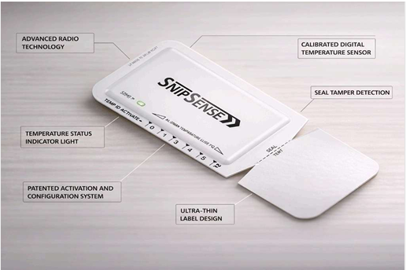

When saving as PDF: in the Print dialog, turn off "Headers and footers" so the date, title and file path do not appear on the PDF.
SnipSense™ Disposable Tag
Product diagram

Feature overview: radio, temperature sensing, seal tamper, ultra-thin label, user activation (tear/cut threshold), and status LED—see labels on diagram.
Portal & integration
SnipSense is a unique product designed for applications where the state of a seal and/or temperature must be monitored over a defined period, but where retrieval of the device is generally unfeasible or impossible. SnipSense uses an innovative, patented system so the end user can activate and configure the device intuitively—no specialised tools or training required.
Environmental friendliness is at the heart of the SnipSense design: every aspect of the device is recyclable, reusable, or disposable with regular household waste. Activate by tearing or cutting the line for your chosen threshold temperature; the device then monitors for over-temperature, return-to-normal, and seal-break events, with status and temperature in every message.
Protect your shipments and assets the easy way with SnipSense.
SnipSense™ Disposable Tag
Seal & temperature monitoring
SnipSense features
Event messages — Generated on seal tamper, threshold temperature exceeded, or return to normal.
Periodic messages — Routine status every 60 minutes (temperature, threshold state, seal state).
Historic temperature — Each message includes the latest plus 3 previous readings for reconstruction if messages are missed.
60-second arming — After activation, an arming window allows attachment without affecting readings.
LED status — Indicates activation success, arming, and over-temperature state.
Development unit — Available for evaluation and payload integration (shorter arming and message interval).
Device states
Sleep — Factory state; up to 2 years before activation.
Activation — User tears/cuts threshold line; LED confirms.
Arming — 60 s window to attach to asset.
Temperature monitoring — Measures every 8 s; alerts at ±1°C vs threshold.
Seal break — Final state; seal-break event sent; temperature still reported in periodic messages.
SnipSense — Seal and temperature monitoring without retrieval. Patented configuration. No tools. Fully disposable.